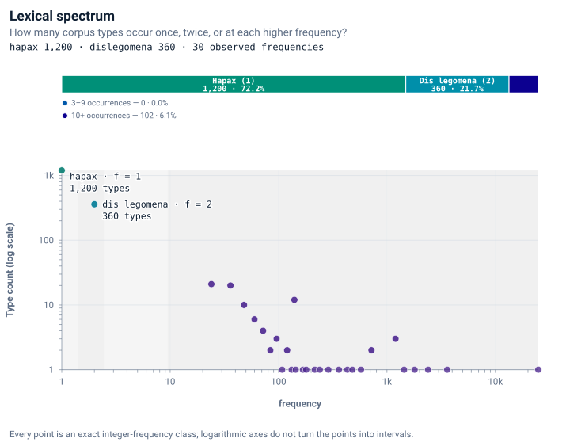
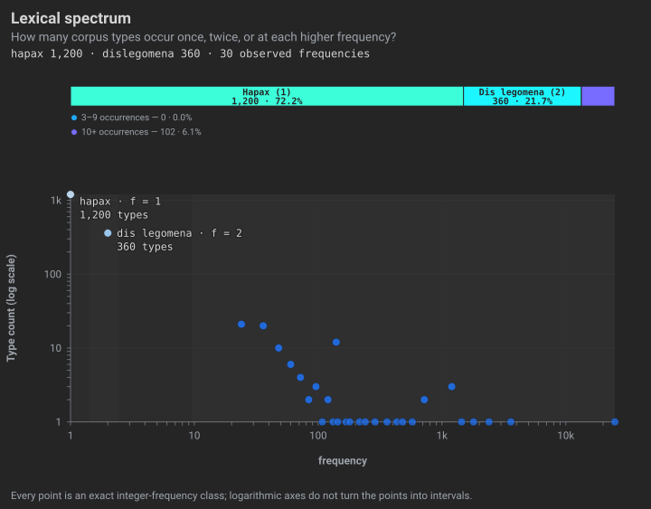
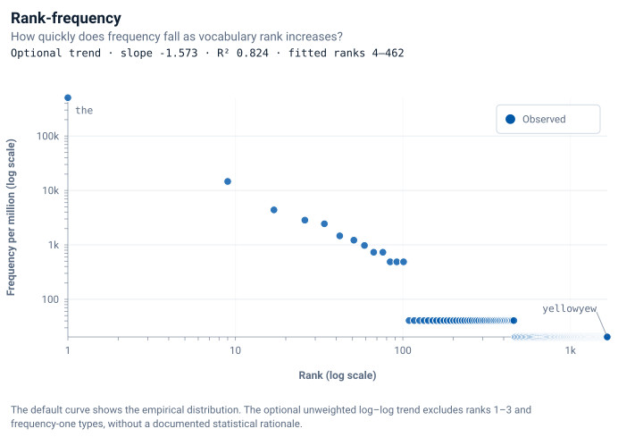
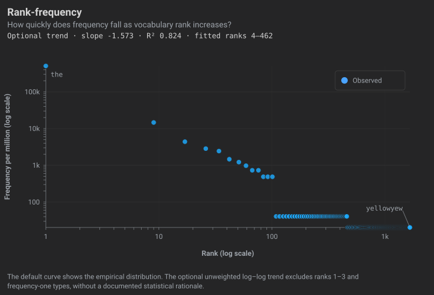
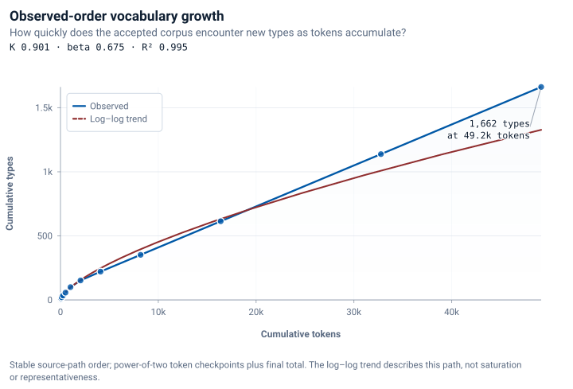
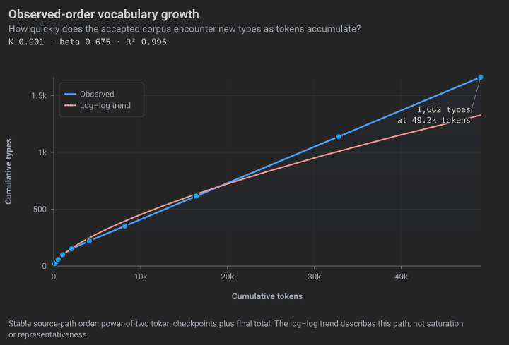

Methods & measures
What does CorpusWright calculate, and what can those numbers tell you about a corpus?
How to read this section
CorpusWright reports counts and descriptive measures for the prepared sample. This page defines the quantities shown in Corpus Overview and Concordance, explains their calculation and states the limits of their interpretation.
Use this page alongside the application: start with tokens and types, then follow the measure you are reading. Each section gives its definition, a worked example or plot, and limits on interpretation. For installation and the practical workflow, use the Guide.
Descriptive diagnostics may prompt further research questions. They do not by themselves supply confirmatory evidence. If a question, comparison or model is chosen after inspecting the same data, treat the analysis as exploratory unless later inference explicitly accounts for that data-dependent choice. Independent validation and prespecified replication are common ways to separate exploration from confirmation. Undisclosed analytical flexibility can increase false-positive results (Simmons, Nelson & Simonsohn, 2011).
Read measures together: frequency with document distribution, lexical diversity with text length, and fitted curves with their observed points and settings. Begin with the token definition and sampling design.
Product figures on this page are CorpusWright exports from a controlled statistical demonstration corpus: twelve equally sized synthetic documents, totalling 49,152 tokens and 1,662 types. The recorded generator, seed, settings and implementation make these exports reproducible; they are not a sample of a language variety. The homepage and Guide use a separate GUI demonstration corpus of eight synthetic prose documents. Tables and algorithm diagrams below are concept schematics or worked examples, with their inputs and calculations shown.
A diagnostic reading order
flowchart TD
Q1["What is
in it?"] --> Q2["What shape
does it have?"]
Q2 --> Q3["Where are the
occurrences located?"]
Q3 --> Q4["What limits
the evidence?"]
Q4 --> Q5["What question does
the design support?"]
Q5 -.-> N["Further inference needs
an estimand, design,
assumptions, uncertainty
and stated scope"]
How the workbench treats your text
flowchart TD
A["Source
text"] --> B["Extract
text"]
B --> C["Detect
artefacts"]
C --> D["Human
review"]
D --> E["Saved cleaning
rules"]
E --> F["Apply cleaning
rules"]
F --> G["Compare Original Text
and Processed Text"]
G --> H{"Intended
changes?"}
H -->|revise| D
H -->|yes| I["Build analysis;
read counts and contexts"]
E -.->|re-run| F
Prepare shows Original Text and Processed Text so you can inspect the effect of cleaning settings before analysis. Repeated Artefacts presents removal candidates for review; accepted rules and enabled cleaning operations affect the processed text. Review uncertain cases and extraction warnings rather than assuming that a detected artefact should be removed.
The same source bytes, software version and settings allow the preparation to be repeated. The cleaned-corpus export records settings, warnings, source/output checksums and tokeniser information. PDF extraction depends on the selected route and source structure; inspect the extracted text, including page boundaries, headers and footers. Later counts describe the text actually used in the analysis, including any source-text fallback reported by the application.
Tokens and types
A token is one counted occurrence; a type is a distinct aggregation key. The sentence In the labyrinth of the library, the tiger sleeps. contains nine word tokens and seven types, because the occurs three times.
CorpusWright uses a shared tokeniser based on Unicode UAX #29, with explicit tailorings: ASCII hyphen compounds and apostrophe contractions are retained, numeric separators are split, and aggregation keys are NFC-normalised and lowercased. Prepare's word count and the surface analysis count words and numbers, excluding standalone punctuation. Preserving case in the processed text does not turn off the default lowercasing of analysis keys.
These rules provide a consistent operational definition, not a universal linguistic definition of a word. They affect counts, diversity and distributions, so retain them with your analytical record. Lemma- and part-of-speech-based counts require a separate annotation layer, which remains experimental.
Frequency: raw and normalised
Raw frequency is the observed count. To compare occurrence rates in corpora of different sizes, state the count and denominator: fifty occurrences in 10,000 tokens and fifty in one million tokens are different rates.
Normalised frequency rescales a count to a stated base. CorpusWright offers rates per ten thousand, hundred thousand and million tokens:
Here \(f\) is the raw count, \(N\) the total tokens in the selected scope, and \(B\) the reporting base.
| Raw count | Corpus tokens | Per million |
|---|---|---|
| 120 | 240,000 | 500 |
| 120 | 12,000,000 | 10 |
This uses a common token denominator. It does not adjust corpus composition, document dependence or sampling uncertainty. A rate based on three occurrences still comes from three observed occurrences. Keep raw counts visible and read them with range and dispersion to describe how occurrences are distributed across documents.
Dispersion: concentration across documents
A frequency total does not locate the occurrences. Two words can have the same count while one occurs in every document and the other occurs in only one. CorpusWright reports Gries's Deviation of Proportions (DP) over individual documents (Gries, 2008).
For \(D\) documents, \(s_i=N_i/N\) is document \(i\)'s share of the corpus tokens and \(v_i=f_i/f\) its share of the word's occurrences. Documents with no occurrence still contribute \(s_i\) to the absolute differences. These “expected” shares are a size-proportional reference, not a fitted sampling model.
DP is zero when occurrence shares match token shares. Larger values describe greater departure from that reference. For a fixed partition of non-empty documents, its upper bound is \(1-\min_i(s_i)\), reached when all occurrences lie in the smallest document. CorpusWright reports unnormalised DP; it does not divide by this bound (Lijffijt & Gries, 2012).
| Document | Token share | labyrinth count | tiger count |
|---|---|---|---|
| 1 | 0.25 | 3 | 12 |
| 2 | 0.25 | 3 | 0 |
| 3 | 0.25 | 3 | 0 |
| 4 | 0.25 | 3 | 0 |
labyrinth: occurrence shares [0.25, 0.25, 0.25, 0.25], so DP = 0. tiger: shares [1, 0, 0, 0], so DP = ½ × (0.75 + 0.25 + 0.25 + 0.25) = 0.75.


DP depends on the document partition, token shares and occurrence counts. Raw DP values from different partitions need not have the same attainable scale, because the maximum depends on the smallest token share. At low frequency, occurrence allocations are coarse: even a single occurrence is necessarily confined to one document. Read DP with the raw count and document range, rather than ranking rare and frequent forms as though their allocations had equal resolution. High DP describes concentration relative to document size; it does not identify a cause such as corpus imbalance. Topic, register, terminology, authorship and sampling composition are possible explanations to examine through document metadata and context.
Document-size concentration
Corpus Overview's Document-size concentration section describes token-size concentration: the largest document's share, the combined share of the three largest documents and the effective document count. For the included documents, with token shares \(s_i=N_i/N\):
This is the number of equally sized documents with the same squared-share concentration: the inverse-concentration effective-number transformation (Hill, 1973, pp. 428–429), applied here to document token shares. It is not an effective sample size for inference, a count of independent observations, or a test of genre balance, representativeness or sampling adequacy.
| Document token shares | Sum of squared shares | Effective document count |
|---|---|---|
| [¼, ¼, ¼, ¼] | ¼ | 4 |
| [½, ⅙, ⅙, ⅙] | ⅓ | 3 |
The size summary also reports Gini and a population coefficient of variation. For sorted token counts \(N_{(i)}\), mean \(\bar N\), and \(D\) included documents:
These describe the supplied token-size distribution. The variance uses \(D\), rather than \(D-1\), because this is a summary of the included documents. None of these quantities supplies inferential uncertainty or independent replication.
Implementation details
Blank resolved texts are skipped. Included non-blank texts with no counted word tokens contribute zero size. With no tokens, token shares and effective document count are unavailable; CV is unavailable at zero mean, and an all-zero non-empty size vector has Gini zero by convention. The top-three share includes all available documents when fewer than three are present.
Collocation: association within a context window
Concordance's Collocates table asks which surface forms occur around a node query under a specified window. A node is an occurrence of the query's contiguous word-token sequence in the selected documents. A collocate is a counted form outside that node; all forms used in the query are excluded as candidates. Matching uses the shared word-and-number tokeniser and the selected case policy, without lemmatisation or grammatical-dependency analysis.
Span counts word-token positions from each edge of the whole node. The default is five positions per side; the control accepts 1–20. Direction selects left, right or both. Windows stop at document boundaries but can cross sentence boundaries. Standalone punctuation is not a counted position. Concordance display retains punctuation from the prepared text; display characters and analytical positions are distinct.
Each node–context-position pair is one co-occurrence event. Repeated collocates within a window count repeatedly; overlapping node windows can count the same corpus occurrence more than once. The corpus frequency of a candidate counts its word tokens once across the selected documents, including occurrences outside the windows. Direction and span therefore change the event count and the available window positions, while leaving that corpus frequency unchanged.
Read association scores with their event counts and corpus frequencies. A high score ranks a candidate under the chosen counting model; it does not establish a lexical unit, semantic similarity or causality. None of these outputs is a p-value or a calibrated significance test for the sampling design.
Let \(c\) be a candidate's node–context-position event count, \(W\) the total positions in the selected windows, \(F\) its token frequency across the selected corpus, and \(N\) the corpus token total. The node-hit count is a separate quantity. \(W\) includes positions occupied by excluded query forms and hidden stopwords. The window baseline is:
The default is MI. The six selectable scores use the quantities above. Their formula forms follow established association measures (Evert, 2008; Hardie, 2014); the definitions below specify CorpusWright's window-event inputs. Overlapping windows count events repeatedly, so they need not form a disjoint partition of corpus tokens. In particular, the complements used by G² and log ratio need not be actual counts outside the union of the windows.
MI — observed events relative to the window baseline
Zero means \(c=E\); positive and negative values indicate more and fewer events than this baseline. An additional point doubles \(c/E\). A large value can be based on very few events, so retain the raw counts and minimum-frequency settings. The score is unavailable unless \(c>0\), \(E>0\) and the ratio is finite. There is no smoothing.
MI³ — an association ranking with greater weight on event count
This is not MI cubed: the event count is cubed inside the logarithm. It equals MI plus \(2\log_2 c\), giving more weight to frequent co-occurrences. Its zero is \(c^3=E\), so its sign does not indicate whether \(c\) exceeds \(E\). It requires positive \(c\), positive \(E\) and a finite ratio; there is no smoothing. Values depend on the event counts and corpus size.
t-score — event excess scaled by the observed count
Positive values indicate more events than the baseline and negative values fewer; higher positive values favour frequent event excesses. The denominator is the square root of the observed event count. The score is unavailable when \(c=0\) or the result is non-finite. No smoothing is applied. This ranking is not a Student's t-test and supplies no inferential degrees of freedom or p-value.
z-score — event excess scaled by the expected count
The sign compares \(c\) with \(E\), as for t-score, but the denominator is the square root of the baseline count. Small \(E\) can produce large values. The score is unavailable unless \(E>0\) and the result is finite. No smoothing is applied. It is not a calibrated normal-test result for overlapping corpus windows.
G² (window table) — departure in either direction
The implementation constructs a table from the window events and corpus totals:
Its row totals are \(R=(W,N-W)\) and column totals \(C=(F,N-F)\). With \(E_{ij}=R_iC_j/N\), it reports:
The logarithm is natural. A zero observed cell contributes zero, including when its expected value is zero. A negative observed cell or marginal, a positive observed cell with a non-positive expectation, or a non-finite result makes the score unavailable; \(N\) must be positive. There is no smoothing or attraction/repulsion sign. Larger departures can describe either excess or deficit; inspect \(c\) and \(E\). Round-off is not clamped. The constructed table does not justify a likelihood-ratio test when its cells do not represent a disjoint token partition.
log ratio (window) — a ratio using the algebraic complement
Zero means the two ratios are equal; positive values mean the window ratio is larger, and each additional point doubles their ratio. This follows the base-2 relative-frequency-ratio form (Hardie, 2014). The complement \(F-c\) is an actual outside-window count only when events partition token occurrences without repetition. CorpusWright does not deduplicate overlapping windows for this calculation. The result is unavailable unless \(W>0\), \(N-W>0\), \(F-c>0\) and the ratio is positive and finite. Zero cells are not smoothed.
| Quantity | Value |
|---|---|
| Node hits | 2 |
| Window positions W | 7 |
| blue events c | 2 |
| blue corpus frequency F | 3 |
| Corpus tokens N | 11 |
| MI | 0.06711 |
Documents: red alpha blue target green alpha blue and yellow target blue green. Query: target; span 2, both directions, case-insensitive, stopwords shown, both minimum counts 1. The two windows supply four and three positions. The form blue occupies two of them and occurs three times in eleven corpus tokens: E = 7 × 3 ÷ 11; MI = log₂(2 ÷ E) = 0.06711.
The minimum co-occurrence and minimum corpus-frequency controls default to five each. They filter candidate rows; they do not remove tokens from \(W\), \(F\) or \(N\). Hide stopwords filters rows after counting. Span, direction, boundaries, processing, case policy and corpus composition change the profile. Retain those settings with a reported result, and examine document distribution and concordance contexts before interpreting an association.
Implementation details
Left, right and both use the same formulas; direction selects the events and positions included in \(c\) and \(W\), while \(F\) and \(N\) retain their selected-corpus scope. The bundled English, French and Portuguese stopword lists follow the language setting; missing or other language tags use English. Rows with no events are excluded even if a requested minimum is zero.
Association sorting defaults to descending MI. Alternative primary sorts use near-query event count or corpus frequency. Ties use descending selected association score, event count, corpus frequency, then ascending form. Unavailable scores follow available ones in either score-sort direction. The backend retains up to 100 rows by default (maximum 500); the interface requests up to 500 and initially displays ten. A collocate evidence filter restricts concordance lines rather than redefining the base node profile.
Inactive compatibility calculation. The former logDice (slots) choice is no longer selectable. Its retained wire field logDice computes \(14+\log_2(2c/(W+F))\), with a positive finite ratio required. It substitutes window positions for the node-frequency marginal in the standard logDice formula (Rychlý, 2008, section 4). Historical tests establish this behaviour, but do not establish a methodological rationale for a distinct measure. The algorithm remains unchanged for compatibility; it is not offered as standard logDice. A defensible event model and intended logDice definition require separate methodological work.
Concordance Distribution
Distribution counts matching query occurrences by document. A phrase match counts once at its starting position; overlapping matches count separately. For document \(i\), it shows hits \(h_i\), counted word-and-number tokens \(N_i\), hits per 10,000 document tokens \(10{,}000h_i/N_i\), and the document's percentage of all hits \(100h_i/H\), where \(H=\sum_i h_i\). A phrase hit is not multiplied by the number of words in the phrase.
The table lists hit-bearing documents. Its rate bars divide each document rate by the highest rate across all hit-bearing documents, including other pages of results; they do not show shares of all hits. The summary reports document range, the largest document's hit share and the same DP calculation, applied to query-hit shares against token shares across all selected documents. Zero-hit documents are omitted from the table but remain in the range denominator and DP partition.
Read the counts, rates and document metadata together. A high rate in a short document and many hits in a long document are different observations. Distribution describes this query under the selected case policy and document scope; it does not measure corpus representativeness. The Collocates span and score do not redefine its query hits.
Implementation details
Rows sort by descending hit count, then display name and document identity; the interface shows ten per page. With no hits, it displays the no-hits state; DP and the leading-document share are returned as zero. A zero-token document has rate zero as a defensive convention, though a word-token query cannot match such a document. A zero maximum gives zero-length bars. The core also returns rates per million; the current table displays per 10,000. A line-only collocate evidence filter leaves Distribution on the unfiltered query.
Lexical diversity: TTR, MATTR, MTLD
The type-token ratio is \(TTR=V/N\), with \(V\) distinct types and \(N\) tokens. It is sensitive to text length: repeated forms add tokens without adding types. TTR commonly falls over longer samples, but it need not decline at every checkpoint; a run of new types can raise it. Unequal lengths confound a comparison of raw TTR (Covington & McFall, 2010).
CorpusWright reports MATTR and MTLD per document. They reduce particular forms of length sensitivity; their settings, text order and vocabulary distribution still matter.
MATTR averages TTR over every contiguous window of \(w\) tokens, moving one token at a time. CorpusWright fixes \(w=100\). If \(V_k\) is the distinct-type count in window \(k\):
MTLD counts a complete factor whenever the running TTR is at or below 0.72, then resets the token and type counts. The final incomplete segment contributes the fraction (1 − segment TTR) / (1 − 0.72). In each direction the value is tokens divided by the total factor count; CorpusWright averages the forward and backward values (McCarthy & Jarvis, 2010).
The application requires at least 100 tokens for either measure. It reports the median, minimum and maximum of available per-document values and counts excluded documents separately. The 100-token minimum is an implementation rule, not a guarantee that short-text estimates are stable.
Implementation details
MTLD is unavailable when no positive factor count can be obtained, including a document with no repeated types.
For comparisons, retain document lengths, MATTR's window and MTLD's threshold, and keep processing and sampling comparable. These measures do not remove differences in genre, morphology or corpus composition.
Frequency spectrum: hapax legomena and dislegomena




A hapax legomenon is a type occurring once; a dislegomenon occurs twice. CorpusWright's hapax share is \(V_1/V\), where \(V_1\) is the number of types occurring once and \(V\) the observed vocabulary size. It describes the low-frequency part of the observed frequency spectrum.
The share depends on corpus size, sampling, morphology, genre mixture, names, terminology and preprocessing. Language has a long low-frequency tail: a high share is not a measure of corpus inadequacy, a saturation threshold or proof that more data are required for a particular question. Interpret it with the frequency spectrum, vocabulary growth and the sampling design (Baayen, 2001; Baayen, 1991).
Rank-frequency distribution




A rank-frequency plot orders types from most to least frequent. Language samples often have a long low-frequency tail and approximately Zipf-like behaviour over part of the range. A familiar shape does not validate tokenisation; an unfamiliar shape does not identify an extraction fault. Inspect unexpected forms and contexts directly.
The optional Curve with trend view adds an unweighted ordinary least-squares line:
Here \(r\) is frequency rank, \(f(r)\) the raw frequency, \(m\) the log–log slope and \(b\) the intercept. The regression excludes ranks 1–3 and all frequency-one types, and needs at least two eligible points. The reported interval states the included ranks. The fixed exclusions have no documented statistical justification; they are an implementation convention, not a method for selecting a power-law range.
Displaying frequencies per million changes the intercept, while slope and \(R^2\) remain unchanged.
This describes log-frequency residuals only within the eligible interval. A constant response is not reported as a perfect explanatory fit.
The optional line and \(R^2\) are descriptive. Log–log least squares does not provide a formal power-law estimate or goodness-of-fit test (Clauset, Shalizi & Newman, 2009). CorpusWright supplies neither uncertainty intervals nor extrapolated predictions here.
Implementation details
Frequency ties have separate ranks in deterministic lexical-key order. The legacy zipfExponent compatibility field stores \(-m\); the interface reports the slope. Finite \(R^2\) values are bounded to [0, 1]. \(R^2\) is unavailable when the response sum of squared deviations is at most machine epsilon; the same numerical convention applies to vocabulary growth.
Vocabulary growth in the observed document order




Vocabulary growth records how many distinct types have been encountered after successive token counts. A Heaps curve summarises the observed relationship:
Here \(N\) is tokens read, \(V(N)\) the distinct types seen by that point, \(K\) the fitted coefficient and \(\beta\) the growth exponent. CorpusWright fits an unweighted least-squares line to natural-log type count against natural-log token count at power-of-two checkpoints and the final corpus point. Checkpoints with either count at most one are omitted. The software does not constrain \(\beta\) to [0, 1].
The product labels this output Observed-order vocabulary growth. A smaller fitted exponent describes slower growth over the observed range in this order. Neither the exponent nor \(R^2\) is an order-invariant corpus property; neither establishes saturation, representativeness or a vocabulary ceiling. Different document orders may yield different trajectories, especially in a heterogeneous sample. Growth depends on text order, token definition and composition (Baayen, 2001). CorpusWright reads documents in stable source-path order, without averaging over permutations. Checkpoints are nested observations, not independent samples; the fitted line and \(R^2\) are descriptive, with no uncertainty estimate or predictive guarantee.
Entropy: Shannon and normalised
Shannon entropy summarises uncertainty in the observed type-frequency distribution (Shannon, 1948). CorpusWright calculates the empirical value in bits:
Here \(f_i\) is type \(i\)'s count, \(N\) the total tokens and \(V\) the observed types. With a fixed vocabulary, the maximum \(\log_2 V\) occurs at equal probabilities. Observed entropy depends on the entire distribution; it does not necessarily rise when observed vocabulary size rises. This unigram summary ignores word order and is not an estimate of uncertainty conditional on linguistic context.
| Type probabilities | H (bits) | H / log₂ V |
|---|---|---|
| [0.25, 0.25, 0.25, 0.25] | 2.00000 | 1.00000 |
| [0.70, 0.10, 0.10, 0.10] | 1.35678 | 0.67839 |
The application labels this ratio Normalised entropy:
This bounds the result and adjusts for the vocabulary-size-dependent maximum. It does not remove differences in corpus size, sampling, composition, preprocessing, tokenisation or estimation. Comparisons are descriptive and conditional on comparable design and processing.
CorpusWright uses observed relative frequencies without a finite-sample bias correction or uncertainty interval. Those matter if empirical entropy is interpreted as an estimate of a population quantity (Paninski, 2003). It also reports Entropy-equivalent vocabulary size, \(2^H\): the number of equally likely types with the same empirical entropy. This is the effective-number transformation of Shannon entropy (Hill, 1973, p. 428), expressed for base-2 logarithms. The application leaves these metrics unavailable for an empty or single-type corpus, rather than displaying a normalised value with an undefined denominator.
Corpus design: representativeness and balance
Representativeness concerns the relationship between a corpus design and the language variety or uses it is intended to describe. State the target domain, text-selection criteria, intended coverage, exclusions and corpus composition. Counts and descriptive diagnostics alone cannot establish that relationship (Sinclair, 2005, sections 2–4). Selecting a subset through metadata does not make it representative as an independent corpus; that claim requires a design for the subset itself (section 3).
Balance is a design property relative to the corpus purpose, sampling frame and intended contrasts. Meaningful external proportions, where they can be estimated, may inform allocation; equal allocation or deliberate oversampling may serve other designs. Language-use populations do not always have knowable component proportions, so no universal allocation rule defines balance (Sinclair, 2005, sections 2 and 5). Retain metadata such as source, date, genre, author and language to interpret the sample.
Dispersion describes the distribution of a feature under a chosen partition. High DP may reflect register, topic, terminology, authorship or sampling composition; it does not diagnose an unbalanced design. Likewise, hapax share is not a corpus-size adequacy test. No combination of rank-frequency trend, growth exponent, hapax share, entropy and dispersion establishes representativeness.
The displayed reading retains continuous counts without quality grades. The default Dispersion plane has no dividing reference lines or reference-based category count. Its witnesses are selected examples. The DP summary reports a median for types with at least ten occurrences; that reporting selection is not an adequacy threshold. Other analysis responses label their fixed DP intervals numerically rather than treating them as linguistic categories.
Reading the Overview
Open Analyse, select Build surface analysis, then choose Corpus Overview in the Analysis tools rail. Use the following order to inspect a prepared sample:
- What entered the analysis? Compare included documents, processed-text use, source-text fallback and token totals with the intended sample. Inspect discrepancies in the inventory and previews.
- How much does document size vary? Read Document-size concentration, token shares and the effective document count. Unequal sizes do not by themselves judge the design.
- Where are selected forms distributed? Read frequency with document range and DP; use Concordance to examine occurrences in context. Concentration is an observation, not an explanation.
- What does the vocabulary distribution look like? Read the Lexical spectrum, Rank-frequency structure and empirical entropy together. Inspect unexpected forms directly.
- Which construction choices matter? MATTR and MTLD depend on window, threshold and sequence; Observed-order vocabulary growth depends on source-path order and its nested checkpoints.
- What does the design support? Return to the target domain, selection criteria, coverage and exclusions before making a claim beyond the prepared sample.
Reading sequence
flowchart TD
P["Input and
sample design"] --> C["Counts and
document sizes"]
C --> D["Frequency and
dispersion"]
D --> V["Vocabulary,
growth and diversity"]
V --> I["Contexts and
interpretive limits"]
I --> Q["What question does
the design support?"]
The standard Corpus Overview describes word forms. Linguistic annotation remains experimental; it is a separate layer for lemma- and POS-based tools.
Reproducibility and provenance
Determinism. Rebuild with the same source bytes, software version and configuration to reproduce the counts. Vocabulary growth uses stable source-path order. Document selection and cleaning settings are part of the analytical record.
Provenance. The analysis reports its input population, source-text fallback and build/configuration signatures. A cleaned-corpus export records cleaning settings, source/output checksums and the tokeniser identity, version and policy. Document selection, aggregation policy and the source-path order used by growth belong in the analytical record. Retain the software release and, for annotated analyses, model details with any reported result; do not assume every analysis export automatically records those fields. Partial or experimental outputs need that status preserved.
Further reading
Exploratory data analysis
- Tukey, J. W. (1977). Exploratory Data Analysis. Addison-Wesley.
Research design and analytical flexibility
- Simmons, J. P., Nelson, L. D., & Simonsohn, U. (2011). False-positive psychology: undisclosed flexibility in data collection and analysis allows presenting anything as significant. Psychological Science, 22(11), 1359–1366. Article.
Corpus design and statistics
- Sinclair, J. (2005). Corpus and text — basic principles. In M. Wynne (Ed.), Developing Linguistic Corpora: a Guide to Good Practice (pp. 1–16). Oxbow Books. Chapter.
- Brezina, V. (2018). Statistics in Corpus Linguistics: A Practical Guide. Cambridge University Press.
- McEnery, T., & Hardie, A. (2012). Corpus Linguistics: Method, Theory and Practice. Cambridge University Press.
Dispersion
- Gries, S. Th. (2008). Dispersions and adjusted frequencies in corpora. International Journal of Corpus Linguistics, 13(4), 403–437. Article.
- Lijffijt, J., & Gries, S. Th. (2012). Correction to “Dispersions and adjusted frequencies in corpora”. International Journal of Corpus Linguistics, 17(1), 147–149. Article.
Collocation
- Evert, S. (2008). Corpora and collocations. In A. Lüdeling & M. Kytö (Eds.), Corpus Linguistics: An International Handbook, vol. 2, 1212–1248. Mouton de Gruyter. Extended manuscript.
- Hardie, A. (2014). Log Ratio – an informal introduction. ESRC Centre for Corpus Approaches to Social Science. Explanation.
- Rychlý, P. (2008). A lexicographer-friendly association score. Proceedings of Recent Advances in Slavonic Natural Language Processing (RASLAN), 6–9. Masaryk University. Paper.
Effective-number transformations
- Hill, M. O. (1973). Diversity and evenness: a unifying notation and its consequences. Ecology, 54(2), 427–432. Article.
Lexical diversity
- Covington, M. A., & McFall, J. D. (2010). Cutting the Gordian knot: the moving-average type-token ratio (MATTR). Journal of Quantitative Linguistics, 17(2), 94–100. Article.
- McCarthy, P. M., & Jarvis, S. (2010). MTLD, vocd-D, and HD-D: a validation study of sophisticated approaches to lexical diversity assessment. Behavior Research Methods, 42(2), 381–392. Article.
Vocabulary distributions and productivity
- Baayen, R. H. (2001). Word Frequency Distributions. Kluwer.
- Baayen, H. (1991). A stochastic process for word frequency distributions. Proceedings of the 29th Annual Meeting of the Association for Computational Linguistics, 271–278. Paper.
- Heaps, H. S. (1978). Information Retrieval: Computational and Theoretical Aspects. Academic Press.
- Clauset, A., Shalizi, C. R., & Newman, M. E. J. (2009). Power-law distributions in empirical data. SIAM Review, 51(4), 661–703. Paper.
- Zipf, G. K. (1949). Human Behavior and the Principle of Least Effort. Addison-Wesley.
Information theory